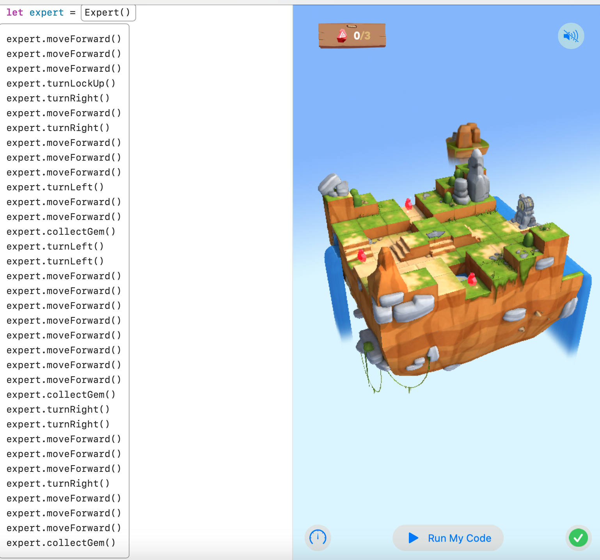
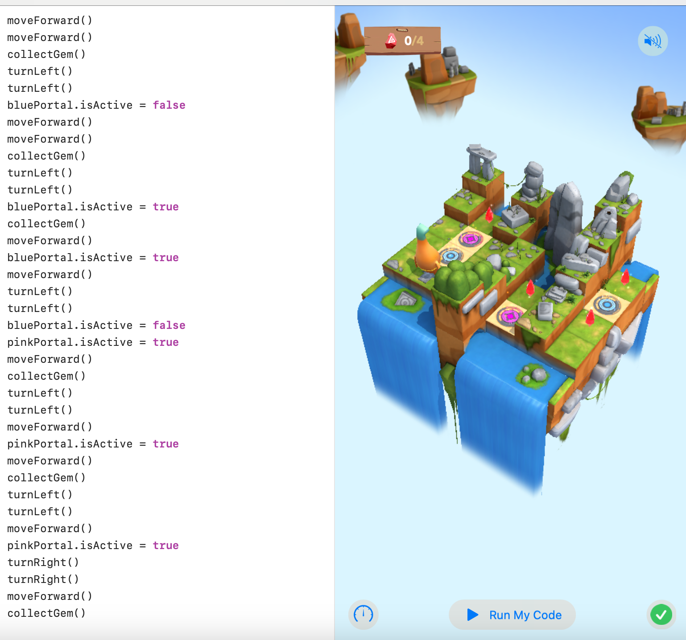

Unit 1 Concepts
 Concepts Covered
Commands
Commands are instructions given to a computer to perform a specific task. They are the building blocks of programs and are executed in sequence to achieve a desired outcome.
For Loops
For loops are used to repeat a block of code a certain number of times. They are useful for iterating over collections or performing repetitive tasks efficiently.
Conditional Code
Conditional code allows programs to make decisions based on certain conditions. It uses statements like 'if', 'else', and 'switch' to execute different blocks of code depending on whether conditions are met.
Logical Operators
Logical operators are used to combine or invert boolean values. Common logical operators include 'AND', 'OR', and 'NOT', which help in making complex decisions based on multiple conditions.
Variables
Variables are storage locations in memory with a name and a value. They are used to hold data that can be manipulated and referenced throughout a program.
Types
Types define the kind of data that can be stored in a variable. Common types include integers, floating-point numbers, strings, and booleans, each with its own operations and constraints.
Initialization
Initialization is the process of setting a variable to a known value at the time of its creation. It ensures that variables have a valid value before they are used in operations.
Functions
Functions are reusable blocks of code that perform a specific task. They help in organizing code, improving readability, and reducing redundancy by encapsulating logic that can be invoked multiple times.
Parameters
Parameters are variables passed into functions to provide input values. They allow functions to operate on different data and produce varied results based on the arguments provided.